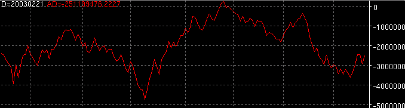

Accumulation Distribution - AD

Parameters:
Color - AD plot color
Line Type - The type of plot to draw
Label - The text that identifies the AD plot
Method - The type of AD method to use:
AD - Standard version
WAD - William's version
Description: